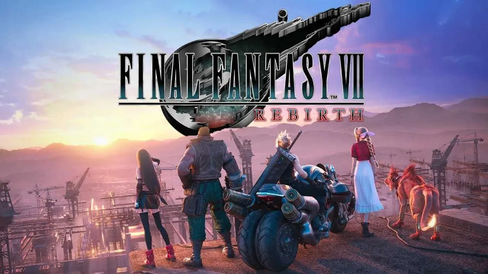

A experiência clássica de Final Fantasy
Publicado 22 de Fevereiro de 2024 às 11:00
Se você gosta do que o jogo original proporcionou, assim como os clássicos da franquia, incluindo
FF6, FF8, FF9, FF10 e FF12, saiba que Rebirth carrega elementos de todos esses títulos de uma
maneira harmoniosa e espetacular.
A experiência de avançar na história, conhecer (ou revisitar) lugares, descobrir quais segredos o
título guarda, quais armas você pode obter, como conseguir novas invocações, chefes secretos, passar
raiva com minigames que contam com recompensas valiosas e tudo mais é justamente o que os fãs de
Final Fantasy não vivenciavam há um bom tempo na franquia. Isso volta de maneira primorosa no novo
título.
O Veredicto
Publicado 22 de Fevereiro de 2024 às 11:00 Final Fantasy 7 Rebirth é uma experiência completa que faz jus à franquia mais clássica dos RPGs nos videogames. O jogo é tudo que os fãs da longeva da série desejavam, mas não recebiam há muito tempo. A história poderá ser revivida e recontada, mas dessa vez com a incerteza sobre o destino de cada um dos personagens. Toda a expectativa criada em torno do jogo mais aguardado de 2024 foi plenamente recompensada com um título que, mesmo não sendo perfeito, é uma verdadeira obra-prima de um gênero que se popularizou muito graças à longeva franquia da Square Enix.
Leia maisPostagens recentes
Usando inteligência artificial, o Modo Segundo Plano permite que o usuário faça outras atividades enquanto o ROG 8 joga sozinho, por meio de comandos pré-programados...
Leia maisSamsung lançou, nesta terça-feira (4), os novos monitores monitores Odyssey OLED G8 e OLED G6, ambos com tecnologia OLED nas telas. Os modelos são voltados para o público gamer, com hardware e recursos atualizados em relação às versões anteriores da linha...
Leia mais